<!DOCTYPE html>


<html >

  <head>
    <meta charset="utf-8" />
    <meta name="viewport" content="width=device-width, initial-scale=1.0" /><meta name="generator" content="Docutils 0.17.1: http://docutils.sourceforge.net/" />

    <title>Restaurant Data ( Zomato ) &#8212; Web Scraping with Python</title>
  
  
  
  <script data-cfasync="false">
    document.documentElement.dataset.mode = localStorage.getItem("mode") || "";
    document.documentElement.dataset.theme = localStorage.getItem("theme") || "light";
  </script>
  
  <!-- Loaded before other Sphinx assets -->
  <link href="_static/styles/theme.css?digest=12da95d707ffb74b382d" rel="stylesheet" />
<link href="_static/styles/bootstrap.css?digest=12da95d707ffb74b382d" rel="stylesheet" />
<link href="_static/styles/pydata-sphinx-theme.css?digest=12da95d707ffb74b382d" rel="stylesheet" />

  
  <link href="_static/vendor/fontawesome/6.1.2/css/all.min.css?digest=12da95d707ffb74b382d" rel="stylesheet" />
  <link rel="preload" as="font" type="font/woff2" crossorigin href="_static/vendor/fontawesome/6.1.2/webfonts/fa-solid-900.woff2" />
<link rel="preload" as="font" type="font/woff2" crossorigin href="_static/vendor/fontawesome/6.1.2/webfonts/fa-brands-400.woff2" />
<link rel="preload" as="font" type="font/woff2" crossorigin href="_static/vendor/fontawesome/6.1.2/webfonts/fa-regular-400.woff2" />

    <link rel="stylesheet" type="text/css" href="_static/pygments.css" />
    <link rel="stylesheet" href="_static/styles/sphinx-book-theme.css?digest=14f4ca6b54d191a8c7657f6c759bf11a5fb86285" type="text/css" />
    <link rel="stylesheet" type="text/css" href="_static/togglebutton.css" />
    <link rel="stylesheet" type="text/css" href="_static/copybutton.css" />
    <link rel="stylesheet" type="text/css" href="_static/mystnb.4510f1fc1dee50b3e5859aac5469c37c29e427902b24a333a5f9fcb2f0b3ac41.css" />
    <link rel="stylesheet" type="text/css" href="_static/sphinx-thebe.css" />
    <link rel="stylesheet" type="text/css" href="_static/design-style.4045f2051d55cab465a707391d5b2007.min.css" />
  
  <!-- Pre-loaded scripts that we'll load fully later -->
  <link rel="preload" as="script" href="_static/scripts/bootstrap.js?digest=12da95d707ffb74b382d" />
<link rel="preload" as="script" href="_static/scripts/pydata-sphinx-theme.js?digest=12da95d707ffb74b382d" />

    <script data-url_root="./" id="documentation_options" src="_static/documentation_options.js"></script>
    <script src="_static/jquery.js"></script>
    <script src="_static/underscore.js"></script>
    <script src="_static/doctools.js"></script>
    <script src="_static/clipboard.min.js"></script>
    <script src="_static/copybutton.js"></script>
    <script src="_static/scripts/sphinx-book-theme.js?digest=5a5c038af52cf7bc1a1ec88eea08e6366ee68824"></script>
    <script>let toggleHintShow = 'Click to show';</script>
    <script>let toggleHintHide = 'Click to hide';</script>
    <script>let toggleOpenOnPrint = 'true';</script>
    <script src="_static/togglebutton.js"></script>
    <script>var togglebuttonSelector = '.toggle, .admonition.dropdown';</script>
    <script src="_static/design-tabs.js"></script>
    <script>const THEBE_JS_URL = "https://unpkg.com/thebe@0.8.2/lib/index.js"
const thebe_selector = ".thebe,.cell"
const thebe_selector_input = "pre"
const thebe_selector_output = ".output, .cell_output"
</script>
    <script async="async" src="_static/sphinx-thebe.js"></script>
    <script>DOCUMENTATION_OPTIONS.pagename = 'Restaurant Data';</script>
    <link rel="index" title="Index" href="genindex.html" />
    <link rel="search" title="Search" href="search.html" />
    <link rel="next" title="House Listing Data (99 Acres , Magic Bricks etc.)" href="House%20Listing%20Data.html" />
    <link rel="prev" title="Kaggle Datasets" href="Kaggle_Datasets.html" />
  <meta name="viewport" content="width=device-width, initial-scale=1"/>
  <meta name="docsearch:language" content="None"/>
  </head>
  
  
  <body data-bs-spy="scroll" data-bs-target=".bd-toc-nav" data-offset="180" data-bs-root-margin="0px 0px -60%" data-default-mode="">

  
  
  <a class="skip-link" href="#main-content">Skip to main content</a>
  
  <input type="checkbox"
          class="sidebar-toggle"
          name="__primary"
          id="__primary"/>
  <label class="overlay overlay-primary" for="__primary"></label>
  
  <input type="checkbox"
          class="sidebar-toggle"
          name="__secondary"
          id="__secondary"/>
  <label class="overlay overlay-secondary" for="__secondary"></label>
  
  <div class="search-button__wrapper">
    <div class="search-button__overlay"></div>
    <div class="search-button__search-container">
<form class="bd-search d-flex align-items-center"
      action="search.html"
      method="get">
  <i class="fa-solid fa-magnifying-glass"></i>
  <input type="search"
         class="form-control"
         name="q"
         id="search-input"
         placeholder="Search this book..."
         aria-label="Search this book..."
         autocomplete="off"
         autocorrect="off"
         autocapitalize="off"
         spellcheck="false"/>
  <span class="search-button__kbd-shortcut"><kbd class="kbd-shortcut__modifier">Ctrl</kbd>+<kbd>K</kbd></span>
</form></div>
  </div>
  
    <nav class="bd-header navbar navbar-expand-lg bd-navbar">
    </nav>
  
  <div class="bd-container">
    <div class="bd-container__inner bd-page-width">
      
      <div class="bd-sidebar-primary bd-sidebar">
        

  
  <div class="sidebar-header-items sidebar-primary__section">
    
    
    
    
  </div>
  
    <div class="sidebar-primary-items__start sidebar-primary__section">
        <div class="sidebar-primary-item">
  

<a class="navbar-brand logo" href="welcome.html">
  
  
  
  
    
    
      
    
    
    
    <script>document.write(``);</script>
  
  
</a></div>
        <div class="sidebar-primary-item"><nav class="bd-links" id="bd-docs-nav" aria-label="Main">
    <div class="bd-toc-item navbar-nav active">
        
        <ul class="nav bd-sidenav bd-sidenav__home-link">
            <li class="toctree-l1">
                <a class="reference internal" href="welcome.html">
                    New age sources of data
                </a>
            </li>
        </ul>
        <p aria-level="2" class="caption" role="heading"><span class="caption-text">How To</span></p>
<ul class="nav bd-sidenav">
<li class="toctree-l1"><a class="reference internal" href="How-To-Interact-With-This-Book.html">How To Interact With This Book</a></li>
</ul>
<p aria-level="2" class="caption" role="heading"><span class="caption-text">Workshop Walkthrough</span></p>
<ul class="current nav bd-sidenav">
<li class="toctree-l1"><a class="reference internal" href="Google%20Trends.html">Google Trends</a></li>
<li class="toctree-l1"><a class="reference internal" href="Google-Mobility-Report.html">Google Mobility Reports and Popular Times API</a></li>

<li class="toctree-l1"><a class="reference internal" href="Twitter%20Apis.html">Twitter Data</a></li>
<li class="toctree-l1"><a class="reference internal" href="Kaggle_Datasets.html">Kaggle Datasets</a></li>

<li class="toctree-l1 current active"><a class="current reference internal" href="#">Restaurant Data ( Zomato )</a></li>

<li class="toctree-l1"><a class="reference internal" href="House%20Listing%20Data.html">House Listing Data (99 Acres , Magic Bricks etc.)</a></li>
</ul>

    </div>
</nav></div>
    </div>
  
  
  <div class="sidebar-primary-items__end sidebar-primary__section">
  </div>
  
  <div id="rtd-footer-container"></div>


      </div>
      
      <main id="main-content" class="bd-main">
        
        

<div class="sbt-scroll-pixel-helper"></div>

          <div class="bd-content">
            <div class="bd-article-container">
              
              <div class="bd-header-article">
<div class="header-article-items header-article__inner">
  
    <div class="header-article-items__start">
      
        <div class="header-article-item"><label class="sidebar-toggle primary-toggle btn btn-sm" for="__primary" title="Toggle primary sidebar" data-bs-placement="bottom" data-bs-toggle="tooltip">
  <span class="fa-solid fa-bars"></span>
</label></div>
      
    </div>
  
  
    <div class="header-article-items__end">
      
        <div class="header-article-item">

<div class="article-header-buttons">


<div class="dropdown dropdown-source-buttons">
  <button class="btn dropdown-toggle" type="button" data-bs-toggle="dropdown" aria-expanded="false" aria-label="Source repositories">
    <i class="fab fa-github"></i>
  </button>
  <ul class="dropdown-menu">
      
      
      
      <li><a href="https://github.com/executablebooks/jupyter-book" target="_blank"
   class="btn btn-sm btn-source-repository-button dropdown-item"
   title="Source repository"
   data-bs-placement="left" data-bs-toggle="tooltip"
>
  

<span class="btn__icon-container">
  <i class="fab fa-github"></i>
  </span>
<span class="btn__text-container">Repository</span>
</a>
</li>
      
      
      
      
      <li><a href="https://github.com/executablebooks/jupyter-book/issues/new?title=Issue%20on%20page%20%2FRestaurant Data.html&body=Your%20issue%20content%20here." target="_blank"
   class="btn btn-sm btn-source-issues-button dropdown-item"
   title="Open an issue"
   data-bs-placement="left" data-bs-toggle="tooltip"
>
  

<span class="btn__icon-container">
  <i class="fas fa-lightbulb"></i>
  </span>
<span class="btn__text-container">Open issue</span>
</a>
</li>
      
  </ul>
</div>


<div class="dropdown dropdown-download-buttons">
  <button class="btn dropdown-toggle" type="button" data-bs-toggle="dropdown" aria-expanded="false" aria-label="Download this page">
    <i class="fas fa-download"></i>
  </button>
  <ul class="dropdown-menu">
      
      
      
      <li><a href="_sources/Restaurant Data.ipynb" target="_blank"
   class="btn btn-sm btn-download-source-button dropdown-item"
   title="Download source file"
   data-bs-placement="left" data-bs-toggle="tooltip"
>
  

<span class="btn__icon-container">
  <i class="fas fa-file"></i>
  </span>
<span class="btn__text-container">.ipynb</span>
</a>
</li>
      
      
      
      
      <li>
<button onclick="window.print()"
  class="btn btn-sm btn-download-pdf-button dropdown-item"
  title="Print to PDF"
  data-bs-placement="left" data-bs-toggle="tooltip"
>
  

<span class="btn__icon-container">
  <i class="fas fa-file-pdf"></i>
  </span>
<span class="btn__text-container">.pdf</span>
</button>
</li>
      
  </ul>
</div>


<button onclick="toggleFullScreen()"
  class="btn btn-sm btn-fullscreen-button"
  title="Fullscreen mode"
  data-bs-placement="bottom" data-bs-toggle="tooltip"
>
  

<span class="btn__icon-container">
  <i class="fas fa-expand"></i>
  </span>

</button>


<script>
document.write(`
  <button class="theme-switch-button btn btn-sm btn-outline-primary navbar-btn rounded-circle" title="light/dark" aria-label="light/dark" data-bs-placement="bottom" data-bs-toggle="tooltip">
    <span class="theme-switch" data-mode="light"><i class="fa-solid fa-sun"></i></span>
    <span class="theme-switch" data-mode="dark"><i class="fa-solid fa-moon"></i></span>
    <span class="theme-switch" data-mode="auto"><i class="fa-solid fa-circle-half-stroke"></i></span>
  </button>
`);
</script>

<script>
document.write(`
  <button class="btn btn-sm navbar-btn search-button search-button__button" title="Search" aria-label="Search" data-bs-placement="bottom" data-bs-toggle="tooltip">
    <i class="fa-solid fa-magnifying-glass"></i>
  </button>
`);
</script>
<label class="sidebar-toggle secondary-toggle btn btn-sm" for="__secondary"title="Toggle secondary sidebar" data-bs-placement="bottom" data-bs-toggle="tooltip">
    <span class="fa-solid fa-list"></span>
</label>
</div></div>
      
    </div>
  
</div>
</div>
              
              

<div id="jb-print-docs-body" class="onlyprint">
    <h1>Restaurant Data ( Zomato )</h1>
    <!-- Table of contents -->
    <div id="print-main-content">
        <div id="jb-print-toc">
            
            <div>
                <h2> Contents </h2>
            </div>
            <nav aria-label="Page">
                <ul class="visible nav section-nav flex-column">
<li class="toc-h1 nav-item toc-entry"><a class="reference internal nav-link" href="#">Restaurant Data ( Zomato )</a></li>
<li class="toc-h1 nav-item toc-entry"><a class="reference internal nav-link" href="#zomato-trends">ZOMATO TRENDS</a></li>
</ul>

            </nav>
        </div>
    </div>
</div>

              
                
<div id="searchbox"></div>
                <article class="bd-article" role="main">
                  
  <section class="tex2jax_ignore mathjax_ignore" id="restaurant-data-zomato">
<h1>Restaurant Data ( Zomato )<a class="headerlink" href="#restaurant-data-zomato" title="Permalink to this headline">#</a></h1>
<br>
<p>The Zomato API is a service provided by Zomato that allows developers to access a variety of information related to restaurants, including details about specific restaurants, collections of restaurants, restaurant reviews, and restaurant ratings.</p>
<p>Here are some of the things you can do with the Zomato API:</p>
<p>Search: You can use the Zomato API to search for restaurants based on a variety of parameters, including the restaurant’s name, its location, the type of cuisine it offers, and more.</p>
<p>Restaurant Details: The API allows you to retrieve detailed information about a specific restaurant. This can include the restaurant’s address, operating hours, average cost, menu, user ratings, and reviews.</p>
<p>Collections: Zomato organizes restaurants into collections based on themes, such as ‘Romantic Restaurants’, ‘Rooftop Restaurants’, ‘Healthy Eating’, and more. The API allows you to retrieve information about these collections.</p>
<p>Reviews: The API provides access to user-generated reviews and ratings for restaurants.</p>
<p>Cuisines: You can use the API to retrieve a list of cuisines available in a particular city or locality.</p>
<p>Locations: The API can provide details about different locations, including popular localities in a city, their top-rated restaurants, and more.</p>
<br><br>
<p><em><strong>We will get the top 5 and bottom 5 localities in Delhi NCR based on ratings , popularity , variety of cuisines and cost per meal</strong></em></p>
<p><code class="docutils literal notranslate"><span class="pre">Note</span></code> : This Data was scraped in October 2020 , this exercise is to show how  one can leverage data which impacts us daily</p>
<br><div class="cell docutils container">
<div class="cell_input docutils container">
<div class="highlight-ipython3 notranslate"><div class="highlight"><pre><span></span><span class="kn">import</span> <span class="nn">pandas</span> <span class="k">as</span> <span class="nn">pd</span>
<span class="kn">import</span> <span class="nn">warnings</span>

<span class="kn">import</span> <span class="nn">matplotlib.pyplot</span> <span class="k">as</span> <span class="nn">plt</span>
<span class="kn">import</span> <span class="nn">seaborn</span> <span class="k">as</span> <span class="nn">sns</span>

<span class="n">warnings</span><span class="o">.</span><span class="n">filterwarnings</span><span class="p">(</span><span class="s2">&quot;ignore&quot;</span><span class="p">)</span>

<span class="n">df</span> <span class="o">=</span> <span class="n">pd</span><span class="o">.</span><span class="n">read_csv</span><span class="p">(</span><span class="sa">r</span><span class="s1">&#39;../offline/data/delhi_scraped.csv&#39;</span><span class="p">,</span><span class="n">encoding</span><span class="o">=</span><span class="s1">&#39;ISO-8859-1&#39;</span><span class="p">,</span> <span class="n">error_bad_lines</span><span class="o">=</span><span class="kc">False</span><span class="p">)</span>
<span class="n">df</span><span class="o">.</span><span class="n">head</span><span class="p">(</span><span class="mi">5</span><span class="p">)</span>
</pre></div>
</div>
</div>
<div class="cell_output docutils container">
<div class="output stderr highlight-myst-ansi notranslate"><div class="highlight"><pre><span></span>b&#39;Skipping line 5222: expected 63 fields, saw 64\nSkipping line 10380: expected 63 fields, saw 73\nSkipping line 10862: expected 63 fields, saw 64\nSkipping line 15288: expected 63 fields, saw 64\n&#39;
b&#39;Skipping line 19415: expected 63 fields, saw 64\nSkipping line 22485: expected 63 fields, saw 64\nSkipping line 23543: expected 63 fields, saw 64\nSkipping line 26269: expected 63 fields, saw 64\nSkipping line 29681: expected 63 fields, saw 64\n&#39;
</pre></div>
</div>
<div class="output text_html"><div>
<style scoped>
    .dataframe tbody tr th:only-of-type {
        vertical-align: middle;
    }

    .dataframe tbody tr th {
        vertical-align: top;
    }

    .dataframe thead th {
        text-align: right;
    }
</style>
<table border="1" class="dataframe">
  <thead>
    <tr style="text-align: right;">
      <th></th>
      <th>apikey</th>
      <th>id</th>
      <th>name</th>
      <th>url</th>
      <th>switch_to_order_menu</th>
      <th>cuisines</th>
      <th>timings</th>
      <th>average_cost_for_two</th>
      <th>price_range</th>
      <th>currency</th>
      <th>...</th>
      <th>user_rating.votes</th>
      <th>all_reviews.reviews</th>
      <th>order_url</th>
      <th>order_deeplink</th>
      <th>medio_provider</th>
      <th>zomato_events</th>
      <th>book_url</th>
      <th>user_rating.custom_rating_text</th>
      <th>user_rating.custom_rating_text_background</th>
      <th>user_rating.rating_tool_tip</th>
    </tr>
  </thead>
  <tbody>
    <tr>
      <th>0</th>
      <td>bb1e1111c5820027c0f749c14562d1e2</td>
      <td>19028853</td>
      <td>Cafe AV</td>
      <td>https://www.zomato.com/ncr/cafe-av-indirapuram...</td>
      <td>0.0</td>
      <td>South Indian, North Indian, Fast Food</td>
      <td>12 Noon to 10 PM</td>
      <td>300.0</td>
      <td>1.0</td>
      <td>Rs.</td>
      <td>...</td>
      <td>35.0</td>
      <td>[{'review': []}, {'review': []}, {'review': []...</td>
      <td>NaN</td>
      <td>NaN</td>
      <td>NaN</td>
      <td>NaN</td>
      <td>NaN</td>
      <td>NaN</td>
      <td>NaN</td>
      <td>NaN</td>
    </tr>
    <tr>
      <th>1</th>
      <td>bb1e1111c5820027c0f749c14562d1e2</td>
      <td>19290999</td>
      <td>Pie R Eats</td>
      <td>https://www.zomato.com/ncr/pie-r-eats-vasundha...</td>
      <td>0.0</td>
      <td>Fast Food</td>
      <td>10:30 AM to 10:30 PM</td>
      <td>200.0</td>
      <td>1.0</td>
      <td>Rs.</td>
      <td>...</td>
      <td>11.0</td>
      <td>[{'review': []}, {'review': []}, {'review': []...</td>
      <td>NaN</td>
      <td>NaN</td>
      <td>NaN</td>
      <td>NaN</td>
      <td>NaN</td>
      <td>NaN</td>
      <td>NaN</td>
      <td>NaN</td>
    </tr>
    <tr>
      <th>2</th>
      <td>bb1e1111c5820027c0f749c14562d1e2</td>
      <td>19159931</td>
      <td>The Acai Place</td>
      <td>https://www.zomato.com/ncr/the-acai-place-sush...</td>
      <td>0.0</td>
      <td>Healthy Food, Coffee, Beverages</td>
      <td>11am  9pm (Mon-Sun)</td>
      <td>550.0</td>
      <td>2.0</td>
      <td>Rs.</td>
      <td>...</td>
      <td>24.0</td>
      <td>[{'review': []}, {'review': []}, {'review': []...</td>
      <td>NaN</td>
      <td>NaN</td>
      <td>NaN</td>
      <td>NaN</td>
      <td>NaN</td>
      <td>NaN</td>
      <td>NaN</td>
      <td>NaN</td>
    </tr>
    <tr>
      <th>3</th>
      <td>bb1e1111c5820027c0f749c14562d1e2</td>
      <td>19291006</td>
      <td>Thirsty Frog</td>
      <td>https://www.zomato.com/ncr/thirsty-frog-saket-...</td>
      <td>0.0</td>
      <td>Fast Food, Beverages</td>
      <td>11 AM to 11 PM</td>
      <td>150.0</td>
      <td>1.0</td>
      <td>Rs.</td>
      <td>...</td>
      <td>0.0</td>
      <td>[]</td>
      <td>NaN</td>
      <td>NaN</td>
      <td>NaN</td>
      <td>NaN</td>
      <td>NaN</td>
      <td>NaN</td>
      <td>NaN</td>
      <td>NaN</td>
    </tr>
    <tr>
      <th>4</th>
      <td>bb1e1111c5820027c0f749c14562d1e2</td>
      <td>19159937</td>
      <td>Sanjay Pastry Shop</td>
      <td>https://www.zomato.com/ncr/sanjay-pastry-shop-...</td>
      <td>0.0</td>
      <td>Bakery, Fast Food, Street Food</td>
      <td>11 AM to 10 PM</td>
      <td>200.0</td>
      <td>1.0</td>
      <td>Rs.</td>
      <td>...</td>
      <td>54.0</td>
      <td>[]</td>
      <td>NaN</td>
      <td>NaN</td>
      <td>NaN</td>
      <td>NaN</td>
      <td>NaN</td>
      <td>NaN</td>
      <td>NaN</td>
      <td>NaN</td>
    </tr>
  </tbody>
</table>
<p>5 rows × 63 columns</p>
</div></div></div>
</div>
<p><code class="docutils literal notranslate"><span class="pre">apikey</span></code>: Unique identifiers for the API keys used to access the data. There are 45 unique keys present.</p>
<p><code class="docutils literal notranslate"><span class="pre">id</span></code>: Unique identifiers for the restaurants. There are 39,221 unique IDs.</p>
<p><code class="docutils literal notranslate"><span class="pre">name</span></code>: The names of the restaurants. “Domino’s Pizza” is the most common name, appearing 194 times.</p>
<p><code class="docutils literal notranslate"><span class="pre">url</span></code>: The URLs of the restaurants on Zomato. All URLs are unique.</p>
<p><code class="docutils literal notranslate"><span class="pre">switch_to_order_menu</span></code>: A boolean variable that is always 0 (False), indicating that the order menu is not being switched to.</p>
<p><code class="docutils literal notranslate"><span class="pre">price_range</span></code>: The price range of the restaurants, where 1 is cheap and 4 is expensive. The average price range is 1.8, indicating a mix of cheap and moderately priced restaurants.</p>
<p><code class="docutils literal notranslate"><span class="pre">cuisines</span></code>: The types of cuisine served at the restaurants. The most common cuisine is “North Indian”.</p>
<p><code class="docutils literal notranslate"><span class="pre">average_cost_for_two</span></code>: The average cost for two people to eat at the restaurant. The average cost is around 594.7.</p>
<p><code class="docutils literal notranslate"><span class="pre">currency</span></code>: The currency in which the cost is reported. All costs are reported in Indian Rupees (INR).</p>
<p><code class="docutils literal notranslate"><span class="pre">is_expensive</span></code>: A boolean variable indicating whether the restaurant is considered expensive (defined as having an average cost for two people above 2000). Most restaurants (38,838 out of 39,221) are not considered expensive.</p>
<p><code class="docutils literal notranslate"><span class="pre">locality_from_verbose</span></code>: The locality of the restaurant derived from the ‘location.locality_verbose’ field. The most common locality is “Rohini”.</p>
<p><code class="docutils literal notranslate"><span class="pre">cuisines</span></code>: Lists the types of cuisine that the restaurant serves.</p>
<p><code class="docutils literal notranslate"><span class="pre">timings</span></code>: Specifies the opening hours of the restaurant.</p>
<p><code class="docutils literal notranslate"><span class="pre">average_cost_for_two</span></code>: The average cost for two people to eat at the restaurant.</p>
<p><code class="docutils literal notranslate"><span class="pre">price_range</span></code>: A number from 1 to 4 indicating the price range of the restaurant, where 1 is cheap and 4 is expensive.</p>
<p><code class="docutils literal notranslate"><span class="pre">highlights</span></code>: Lists the special features or services the restaurant offers, such as delivery, takeaway, or outdoor seating.</p>
<p><code class="docutils literal notranslate"><span class="pre">offers</span></code>: Lists any special offers the restaurant has available.</p>
<p><code class="docutils literal notranslate"><span class="pre">opentable_support</span></code>: Indicates whether the restaurant supports reservations through OpenTable.</p>
<p><code class="docutils literal notranslate"><span class="pre">is_zomato_book_res</span></code>: Indicates whether the restaurant supports reservations through Zomato.</p>
<p><code class="docutils literal notranslate"><span class="pre">mezzo_provider</span></code>: The provider of the restaurant’s online ordering system.</p>
<p><code class="docutils literal notranslate"><span class="pre">is_book_form_web_view</span></code>: Indicates whether the restaurant supports online reservations.</p>
<p><code class="docutils literal notranslate"><span class="pre">book_form_web_view_url</span></code>: The URL for making online reservations at the restaurant.</p>
<p><code class="docutils literal notranslate"><span class="pre">thumb</span></code>: The URL of a thumbnail image of the restaurant.</p>
<p><code class="docutils literal notranslate"><span class="pre">user_rating</span></code>: Contains several sub-columns related to user ratings, such as aggregate_rating (the restaurant’s average rating), rating_text (a text description of the rating), and votes (the number of votes the restaurant has received).</p>
<p><code class="docutils literal notranslate"><span class="pre">all_reviews_count</span></code>: The total number of reviews the restaurant has received.</p>
<p><code class="docutils literal notranslate"><span class="pre">photos_url</span></code>: The URL of the restaurant’s photo gallery on Zomato.</p>
<p><code class="docutils literal notranslate"><span class="pre">photo_count</span></code>: The number of photos available for the restaurant on Zomato.</p>
<p><code class="docutils literal notranslate"><span class="pre">menu_url</span></code>: The URL of the restaurant’s menu on Zomato.</p>
<p><code class="docutils literal notranslate"><span class="pre">featured_image</span></code>: The URL of a featured image of the restaurant.</p>
<p><code class="docutils literal notranslate"><span class="pre">has_online_delivery</span></code>: Indicates whether the restaurant offers online delivery.</p>
<p><code class="docutils literal notranslate"><span class="pre">is_delivering_now</span></code>: Indicates whether the restaurant is currently delivering.</p>
<p><code class="docutils literal notranslate"><span class="pre">store_type</span></code>: The type of the restaurant (e.g., casual dining, quick bites).</p>
<div class="cell docutils container">
<div class="cell_input docutils container">
<div class="highlight-ipython3 notranslate"><div class="highlight"><pre><span></span><span class="c1"># Define a threshold for &#39;expensive&#39; restaurants</span>
<span class="n">cost_threshold</span> <span class="o">=</span> <span class="mi">2000</span>
<span class="n">df</span><span class="p">[</span><span class="s1">&#39;is_expensive&#39;</span><span class="p">]</span> <span class="o">=</span> <span class="n">df</span><span class="p">[</span><span class="s1">&#39;average_cost_for_two&#39;</span><span class="p">]</span> <span class="o">&gt;</span> <span class="n">cost_threshold</span>

<span class="c1"># Split &#39;location.locality_verbose&#39; and get the second last element as locality</span>
<span class="n">df</span><span class="p">[</span><span class="s1">&#39;locality_from_verbose&#39;</span><span class="p">]</span> <span class="o">=</span> <span class="n">df</span><span class="p">[</span><span class="s1">&#39;location.locality_verbose&#39;</span><span class="p">]</span><span class="o">.</span><span class="n">apply</span><span class="p">(</span><span class="k">lambda</span> <span class="n">x</span><span class="p">:</span> <span class="n">x</span><span class="o">.</span><span class="n">split</span><span class="p">(</span><span class="s1">&#39;, &#39;</span><span class="p">)[</span><span class="o">-</span><span class="mi">2</span><span class="p">])</span>

<span class="c1"># Filter localities with more than 10 restaurants</span>
<span class="n">locality_counts</span> <span class="o">=</span> <span class="n">df</span><span class="p">[</span><span class="s1">&#39;locality_from_verbose&#39;</span><span class="p">]</span><span class="o">.</span><span class="n">value_counts</span><span class="p">()</span>
<span class="n">localities_with_more_than_10</span> <span class="o">=</span> <span class="n">locality_counts</span><span class="p">[</span><span class="n">locality_counts</span> <span class="o">&gt;</span> <span class="mi">10</span><span class="p">]</span><span class="o">.</span><span class="n">index</span>
<span class="n">df_filtered_localities</span> <span class="o">=</span> <span class="n">df</span><span class="p">[</span><span class="n">df</span><span class="p">[</span><span class="s1">&#39;locality_from_verbose&#39;</span><span class="p">]</span><span class="o">.</span><span class="n">isin</span><span class="p">(</span><span class="n">localities_with_more_than_10</span><span class="p">)]</span>

<span class="c1"># Calculate cost per meal and number of cuisines for the filtered DataFrame</span>
<span class="n">df_filtered_localities</span><span class="p">[</span><span class="s1">&#39;cost_per_meal&#39;</span><span class="p">]</span> <span class="o">=</span> <span class="n">df_filtered_localities</span><span class="p">[</span><span class="s1">&#39;average_cost_for_two&#39;</span><span class="p">]</span> <span class="o">/</span> <span class="mi">2</span>
<span class="n">df_filtered_localities</span><span class="p">[</span><span class="s1">&#39;num_cuisines&#39;</span><span class="p">]</span> <span class="o">=</span> <span class="n">df_filtered_localities</span><span class="p">[</span><span class="s1">&#39;cuisines&#39;</span><span class="p">]</span><span class="o">.</span><span class="n">apply</span><span class="p">(</span><span class="k">lambda</span> <span class="n">x</span><span class="p">:</span> <span class="nb">len</span><span class="p">(</span><span class="nb">str</span><span class="p">(</span><span class="n">x</span><span class="p">)</span><span class="o">.</span><span class="n">split</span><span class="p">(</span><span class="s1">&#39;, &#39;</span><span class="p">)))</span>
<span class="c1"># Calculate the total number of reviews for each locality with more than 10 restaurants</span>
<span class="n">grouped_reviews</span> <span class="o">=</span> <span class="n">df_filtered_localities</span><span class="o">.</span><span class="n">groupby</span><span class="p">(</span><span class="s1">&#39;locality_from_verbose&#39;</span><span class="p">)[</span><span class="s1">&#39;all_reviews_count&#39;</span><span class="p">]</span><span class="o">.</span><span class="n">sum</span><span class="p">()</span>

<span class="c1"># Group by locality and calculate the mean values for each metric</span>
<span class="n">grouped</span> <span class="o">=</span> <span class="n">df_filtered_localities</span><span class="o">.</span><span class="n">groupby</span><span class="p">(</span><span class="s1">&#39;locality_from_verbose&#39;</span><span class="p">)</span><span class="o">.</span><span class="n">agg</span><span class="p">({</span>
    <span class="s1">&#39;user_rating.aggregate_rating&#39;</span><span class="p">:</span> <span class="s1">&#39;mean&#39;</span><span class="p">,</span>
    <span class="s1">&#39;cost_per_meal&#39;</span><span class="p">:</span> <span class="s1">&#39;mean&#39;</span><span class="p">,</span>
    <span class="s1">&#39;num_cuisines&#39;</span><span class="p">:</span> <span class="s1">&#39;mean&#39;</span><span class="p">,</span>
<span class="p">})</span>


<span class="c1"># Get the top and bottom 5 localities by total number of reviews</span>
<span class="n">top_5_localities_by_reviews</span> <span class="o">=</span> <span class="n">grouped_reviews</span><span class="o">.</span><span class="n">sort_values</span><span class="p">(</span><span class="n">ascending</span><span class="o">=</span><span class="kc">False</span><span class="p">)</span><span class="o">.</span><span class="n">head</span><span class="p">(</span><span class="mi">5</span><span class="p">)</span>
<span class="n">bottom_5_localities_by_reviews</span> <span class="o">=</span> <span class="n">grouped_reviews</span><span class="o">.</span><span class="n">sort_values</span><span class="p">(</span><span class="n">ascending</span><span class="o">=</span><span class="kc">True</span><span class="p">)</span><span class="o">.</span><span class="n">head</span><span class="p">(</span><span class="mi">5</span><span class="p">)</span>

<span class="c1"># Get the top and bottom 5 localities for each metric</span>
<span class="n">top_5_localities_by_ratings</span> <span class="o">=</span> <span class="n">grouped</span><span class="p">[</span><span class="s1">&#39;user_rating.aggregate_rating&#39;</span><span class="p">]</span><span class="o">.</span><span class="n">sort_values</span><span class="p">(</span><span class="n">ascending</span><span class="o">=</span><span class="kc">False</span><span class="p">)</span><span class="o">.</span><span class="n">head</span><span class="p">(</span><span class="mi">5</span><span class="p">)</span>
<span class="n">bottom_5_localities_by_ratings</span> <span class="o">=</span> <span class="n">grouped</span><span class="p">[</span><span class="s1">&#39;user_rating.aggregate_rating&#39;</span><span class="p">]</span><span class="o">.</span><span class="n">sort_values</span><span class="p">(</span><span class="n">ascending</span><span class="o">=</span><span class="kc">True</span><span class="p">)</span><span class="o">.</span><span class="n">head</span><span class="p">(</span><span class="mi">5</span><span class="p">)</span>

<span class="n">top_5_localities_by_cost</span> <span class="o">=</span> <span class="n">grouped</span><span class="p">[</span><span class="s1">&#39;cost_per_meal&#39;</span><span class="p">]</span><span class="o">.</span><span class="n">sort_values</span><span class="p">(</span><span class="n">ascending</span><span class="o">=</span><span class="kc">False</span><span class="p">)</span><span class="o">.</span><span class="n">head</span><span class="p">(</span><span class="mi">5</span><span class="p">)</span>
<span class="n">bottom_5_localities_by_cost</span> <span class="o">=</span> <span class="n">grouped</span><span class="p">[</span><span class="s1">&#39;cost_per_meal&#39;</span><span class="p">]</span><span class="o">.</span><span class="n">sort_values</span><span class="p">(</span><span class="n">ascending</span><span class="o">=</span><span class="kc">True</span><span class="p">)</span><span class="o">.</span><span class="n">head</span><span class="p">(</span><span class="mi">5</span><span class="p">)</span>

<span class="n">top_5_localities_by_variety</span> <span class="o">=</span> <span class="n">grouped</span><span class="p">[</span><span class="s1">&#39;num_cuisines&#39;</span><span class="p">]</span><span class="o">.</span><span class="n">sort_values</span><span class="p">(</span><span class="n">ascending</span><span class="o">=</span><span class="kc">False</span><span class="p">)</span><span class="o">.</span><span class="n">head</span><span class="p">(</span><span class="mi">5</span><span class="p">)</span>
<span class="n">bottom_5_localities_by_variety</span> <span class="o">=</span> <span class="n">grouped</span><span class="p">[</span><span class="s1">&#39;num_cuisines&#39;</span><span class="p">]</span><span class="o">.</span><span class="n">sort_values</span><span class="p">(</span><span class="n">ascending</span><span class="o">=</span><span class="kc">True</span><span class="p">)</span><span class="o">.</span><span class="n">head</span><span class="p">(</span><span class="mi">5</span><span class="p">)</span>

<span class="c1"># Generate bar plots for the top and bottom 5 localities for each criterion</span>

<span class="c1"># Helper function to generate a bar plot</span>
<span class="k">def</span> <span class="nf">generate_bar_plot</span><span class="p">(</span><span class="n">data</span><span class="p">,</span> <span class="n">title</span><span class="p">,</span> <span class="n">color</span><span class="p">):</span>
    <span class="kn">import</span> <span class="nn">matplotlib.pyplot</span> <span class="k">as</span> <span class="nn">plt</span>
    <span class="kn">import</span> <span class="nn">seaborn</span> <span class="k">as</span> <span class="nn">sns</span>
    <span class="n">plt</span><span class="o">.</span><span class="n">figure</span><span class="p">(</span><span class="n">figsize</span><span class="o">=</span><span class="p">(</span><span class="mi">10</span><span class="p">,</span> <span class="mi">5</span><span class="p">))</span>
    <span class="n">sns</span><span class="o">.</span><span class="n">barplot</span><span class="p">(</span><span class="n">x</span><span class="o">=</span><span class="n">data</span><span class="o">.</span><span class="n">values</span><span class="p">,</span> <span class="n">y</span><span class="o">=</span><span class="n">data</span><span class="o">.</span><span class="n">index</span><span class="p">,</span> <span class="n">palette</span><span class="o">=</span><span class="n">color</span><span class="p">)</span>
    <span class="n">plt</span><span class="o">.</span><span class="n">title</span><span class="p">(</span><span class="n">title</span><span class="p">)</span>
    <span class="n">plt</span><span class="o">.</span><span class="n">show</span><span class="p">()</span>

<span class="c1"># Generate bar plots for the top 5 localities</span>
<span class="n">generate_bar_plot</span><span class="p">(</span><span class="n">top_5_localities_by_ratings</span><span class="p">,</span> <span class="s1">&#39;Top 5 Localities by Average Ratings&#39;</span><span class="p">,</span> <span class="s1">&#39;viridis&#39;</span><span class="p">)</span>
<span class="n">generate_bar_plot</span><span class="p">(</span><span class="n">top_5_localities_by_cost</span><span class="p">,</span> <span class="s1">&#39;Top 5 Localities by Average Cost per Meal&#39;</span><span class="p">,</span> <span class="s1">&#39;viridis&#39;</span><span class="p">)</span>
<span class="n">generate_bar_plot</span><span class="p">(</span><span class="n">top_5_localities_by_variety</span><span class="p">,</span> <span class="s1">&#39;Top 5 Localities by Variety&#39;</span><span class="p">,</span> <span class="s1">&#39;viridis&#39;</span><span class="p">)</span>
<span class="n">generate_bar_plot</span><span class="p">(</span><span class="n">top_5_localities_by_reviews</span><span class="p">,</span> <span class="s1">&#39;Top 5 Localities by Total Number of Reviews&#39;</span><span class="p">,</span> <span class="s1">&#39;viridis&#39;</span><span class="p">)</span>

<span class="c1"># Generate bar plots for the bottom 5 localities</span>
<span class="n">generate_bar_plot</span><span class="p">(</span><span class="n">bottom_5_localities_by_ratings</span><span class="p">,</span> <span class="s1">&#39;Bottom 5 Localities by Average Ratings&#39;</span><span class="p">,</span> <span class="s1">&#39;rocket&#39;</span><span class="p">)</span>
<span class="n">generate_bar_plot</span><span class="p">(</span><span class="n">bottom_5_localities_by_cost</span><span class="p">,</span> <span class="s1">&#39;Bottom 5 Localities by Average Cost per Meal&#39;</span><span class="p">,</span> <span class="s1">&#39;rocket&#39;</span><span class="p">)</span>
<span class="n">generate_bar_plot</span><span class="p">(</span><span class="n">bottom_5_localities_by_variety</span><span class="p">,</span> <span class="s1">&#39;Bottom 5 Localities by Variety&#39;</span><span class="p">,</span> <span class="s1">&#39;rocket&#39;</span><span class="p">)</span>
<span class="n">generate_bar_plot</span><span class="p">(</span><span class="n">bottom_5_localities_by_reviews</span><span class="p">,</span> <span class="s1">&#39;Bottom 5 Localities by Total Number of Reviews&#39;</span><span class="p">,</span> <span class="s1">&#39;rocket&#39;</span><span class="p">)</span>
</pre></div>
</div>
</div>
<div class="cell_output docutils container">
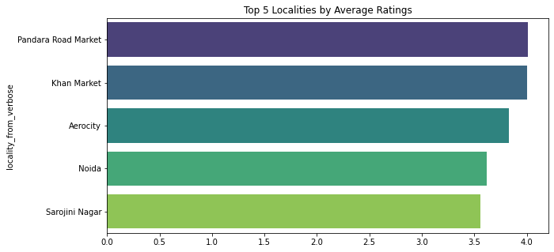
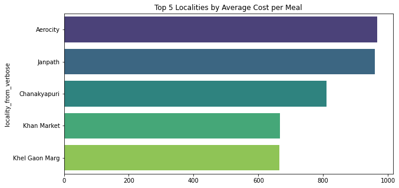
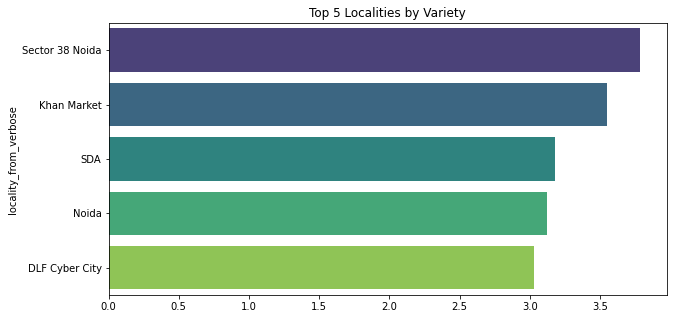
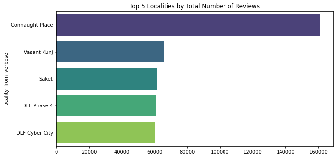
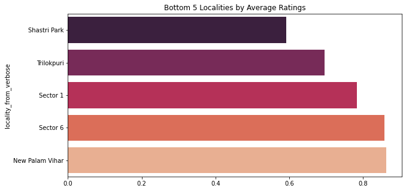
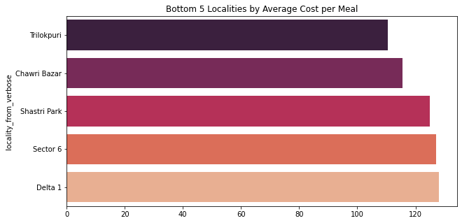
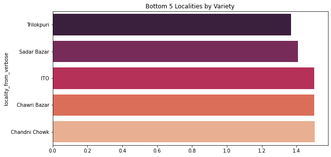
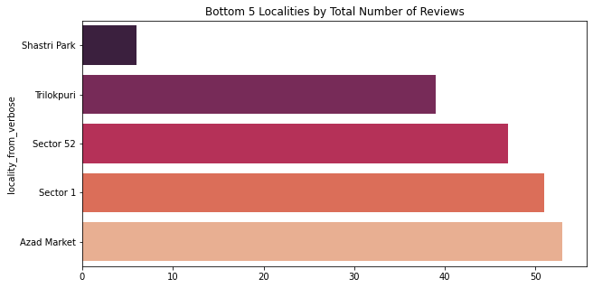
</div>
</div>
</section>
<section class="tex2jax_ignore mathjax_ignore" id="zomato-trends">
<h1>ZOMATO TRENDS<a class="headerlink" href="#zomato-trends" title="Permalink to this headline">#</a></h1>
<br>
<p>What is Zomato Food Trends?</p>
<p>Restaurants need to make crucial decisions regarding the location of the store, the cuisine specialization, menu pricing, and more. In this dynamic industry, a data driven approach towards such decisions can assure, accelerate and amplify success.</p>
<p>Zomato Food Trends provides insights by analyzing the data from millions of transactions across hundreds of cities in India. Restaurant partners can leverage this platform to view:</p>
<p>Demand and supply gaps, zoomed-in to a locality level
Price distribution and demand trends for different dishes or cuisines
Demand-supply comparison for multiple dishes or cuisines</p>
<br>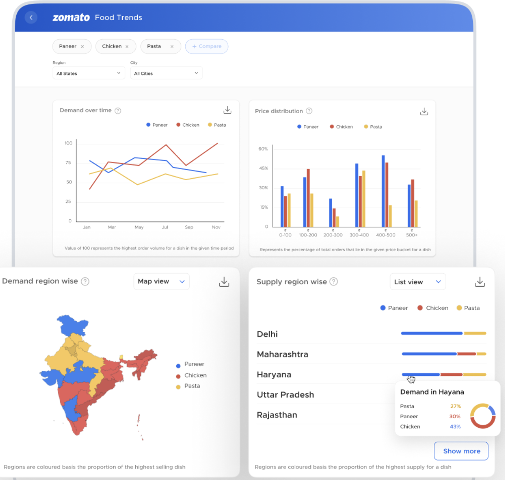
<p><em><strong>We have a demand data for 6 major cities - Delhi NCR , Chennai , Mumbai ,Hyderabad , Bengaluru and Kolkata from Jun-2022 to May-2023</strong></em></p>
<div class="cell docutils container">
<div class="cell_input docutils container">
<div class="highlight-ipython3 notranslate"><div class="highlight"><pre><span></span><span class="kn">import</span> <span class="nn">pandas</span> <span class="k">as</span> <span class="nn">pd</span>
<span class="n">df</span> <span class="o">=</span> <span class="n">pd</span><span class="o">.</span><span class="n">read_csv</span><span class="p">(</span><span class="sa">r</span><span class="s1">&#39;../offline/data/zomato_data.csv&#39;</span><span class="p">)</span>
<span class="n">df</span>
</pre></div>
</div>
</div>
<div class="cell_output docutils container">
<div class="output text_html"><div>
<style scoped>
    .dataframe tbody tr th:only-of-type {
        vertical-align: middle;
    }

    .dataframe tbody tr th {
        vertical-align: top;
    }

    .dataframe thead th {
        text-align: right;
    }
</style>
<table border="1" class="dataframe">
  <thead>
    <tr style="text-align: right;">
      <th></th>
      <th>City</th>
      <th>Cuisine</th>
      <th>May-2023</th>
      <th>Apr-2023</th>
      <th>Mar-2023</th>
      <th>Feb-2023</th>
      <th>Jan-2023</th>
      <th>Dec-2022</th>
      <th>Nov-2022</th>
      <th>Oct-2022</th>
      <th>Sep-2022</th>
      <th>Aug-2022</th>
      <th>Jul-2022</th>
    </tr>
  </thead>
  <tbody>
    <tr>
      <th>0</th>
      <td>Mumbai, Maharashtra</td>
      <td>Demand: Afghan</td>
      <td>NaN</td>
      <td>NaN</td>
      <td>NaN</td>
      <td>100.00</td>
      <td>NaN</td>
      <td>NaN</td>
      <td>NaN</td>
      <td>NaN</td>
      <td>NaN</td>
      <td>NaN</td>
      <td>NaN</td>
    </tr>
    <tr>
      <th>1</th>
      <td>Hyderabad, Telangana</td>
      <td>Demand: Afghan</td>
      <td>NaN</td>
      <td>NaN</td>
      <td>NaN</td>
      <td>NaN</td>
      <td>NaN</td>
      <td>NaN</td>
      <td>NaN</td>
      <td>NaN</td>
      <td>NaN</td>
      <td>NaN</td>
      <td>NaN</td>
    </tr>
    <tr>
      <th>2</th>
      <td>Chennai, Tamil Nadu</td>
      <td>Demand: Afghan</td>
      <td>NaN</td>
      <td>NaN</td>
      <td>NaN</td>
      <td>NaN</td>
      <td>NaN</td>
      <td>NaN</td>
      <td>NaN</td>
      <td>NaN</td>
      <td>NaN</td>
      <td>NaN</td>
      <td>NaN</td>
    </tr>
    <tr>
      <th>3</th>
      <td>Kolkata, West Bengal</td>
      <td>Demand: Afghan</td>
      <td>NaN</td>
      <td>NaN</td>
      <td>NaN</td>
      <td>NaN</td>
      <td>NaN</td>
      <td>NaN</td>
      <td>NaN</td>
      <td>NaN</td>
      <td>NaN</td>
      <td>NaN</td>
      <td>NaN</td>
    </tr>
    <tr>
      <th>4</th>
      <td>Bengaluru, Karnataka</td>
      <td>Demand: Afghan</td>
      <td>76.81</td>
      <td>100.00</td>
      <td>84.29</td>
      <td>70.57</td>
      <td>39.15</td>
      <td>43.89</td>
      <td>59.85</td>
      <td>56.11</td>
      <td>51.12</td>
      <td>45.89</td>
      <td>66.83</td>
    </tr>
    <tr>
      <th>...</th>
      <td>...</td>
      <td>...</td>
      <td>...</td>
      <td>...</td>
      <td>...</td>
      <td>...</td>
      <td>...</td>
      <td>...</td>
      <td>...</td>
      <td>...</td>
      <td>...</td>
      <td>...</td>
      <td>...</td>
    </tr>
    <tr>
      <th>505</th>
      <td>Chennai, Tamil Nadu</td>
      <td>Demand: Wraps</td>
      <td>16.72</td>
      <td>16.78</td>
      <td>19.45</td>
      <td>16.98</td>
      <td>42.44</td>
      <td>100.00</td>
      <td>89.78</td>
      <td>22.86</td>
      <td>16.32</td>
      <td>10.07</td>
      <td>10.45</td>
    </tr>
    <tr>
      <th>506</th>
      <td>Hyderabad, Telangana</td>
      <td>Demand: Wraps</td>
      <td>48.68</td>
      <td>49.69</td>
      <td>100.00</td>
      <td>90.30</td>
      <td>80.63</td>
      <td>87.07</td>
      <td>50.92</td>
      <td>51.01</td>
      <td>40.21</td>
      <td>38.18</td>
      <td>35.84</td>
    </tr>
    <tr>
      <th>507</th>
      <td>Bengaluru, Karnataka</td>
      <td>Demand: Wraps</td>
      <td>5.58</td>
      <td>14.41</td>
      <td>69.43</td>
      <td>94.84</td>
      <td>100.00</td>
      <td>92.48</td>
      <td>3.36</td>
      <td>4.53</td>
      <td>5.04</td>
      <td>5.39</td>
      <td>5.05</td>
    </tr>
    <tr>
      <th>508</th>
      <td>Kolkata, West Bengal</td>
      <td>Demand: Wraps</td>
      <td>68.98</td>
      <td>90.95</td>
      <td>71.68</td>
      <td>60.11</td>
      <td>44.71</td>
      <td>26.44</td>
      <td>18.63</td>
      <td>15.16</td>
      <td>13.63</td>
      <td>10.05</td>
      <td>100.00</td>
    </tr>
    <tr>
      <th>509</th>
      <td>Mumbai, Maharashtra</td>
      <td>Demand: Wraps</td>
      <td>8.46</td>
      <td>16.39</td>
      <td>41.10</td>
      <td>44.36</td>
      <td>25.49</td>
      <td>100.00</td>
      <td>6.97</td>
      <td>7.24</td>
      <td>8.17</td>
      <td>8.87</td>
      <td>8.90</td>
    </tr>
  </tbody>
</table>
<p>510 rows × 13 columns</p>
</div></div></div>
</div>
<br>
The dataset appears to include the following columns:
<p><code class="docutils literal notranslate"><span class="pre">City</span></code>: The city and state in which the orders are being made.</p>
<p><code class="docutils literal notranslate"><span class="pre">Cuisine</span></code>: The type of cuisine/dish for which the demand is measured.</p>
<p><code class="docutils literal notranslate"><span class="pre">May-2023</span> <span class="pre">to</span> <span class="pre">Jul-2022</span></code>: The demand for each month from July 2022 to May 2023. It seems like missing values (NaN) indicate no data is available for that particular month.</p>
<p><code class="docutils literal notranslate"><span class="pre">Demand</span> <span class="pre">number</span> <span class="pre">of</span> <span class="pre">100</span></code> indicates the region with the largest order volume for the specified dish/cuisine
<br></p>
<div class="cell docutils container">
<div class="cell_input docutils container">
<div class="highlight-ipython3 notranslate"><div class="highlight"><pre><span></span><span class="kn">import</span> <span class="nn">matplotlib.pyplot</span> <span class="k">as</span> <span class="nn">plt</span>
<span class="kn">import</span> <span class="nn">seaborn</span> <span class="k">as</span> <span class="nn">sns</span>
<span class="c1"># Create a new dataframe for visualization with each row representing a city-cuisine-month combination</span>
<span class="n">visualization_df_monthly</span> <span class="o">=</span> <span class="n">df</span><span class="o">.</span><span class="n">melt</span><span class="p">(</span><span class="n">id_vars</span><span class="o">=</span><span class="p">[</span><span class="s1">&#39;City&#39;</span><span class="p">,</span> <span class="s1">&#39;Cuisine&#39;</span><span class="p">],</span> <span class="n">value_vars</span><span class="o">=</span><span class="p">[</span><span class="s1">&#39;Jul-2022&#39;</span><span class="p">,</span> <span class="s1">&#39;Aug-2022&#39;</span><span class="p">,</span> <span class="s1">&#39;Sep-2022&#39;</span><span class="p">,</span> <span class="s1">&#39;Oct-2022&#39;</span><span class="p">,</span> <span class="s1">&#39;Dec-2022&#39;</span><span class="p">,</span> <span class="s1">&#39;Jan-2023&#39;</span><span class="p">,</span> <span class="s1">&#39;Feb-2023&#39;</span><span class="p">,</span> <span class="s1">&#39;Mar-2023&#39;</span><span class="p">,</span> <span class="s1">&#39;Apr-2023&#39;</span><span class="p">,</span> <span class="s1">&#39;May-2023&#39;</span><span class="p">],</span> <span class="n">var_name</span><span class="o">=</span><span class="s1">&#39;Month&#39;</span><span class="p">,</span> <span class="n">value_name</span><span class="o">=</span><span class="s1">&#39;Demand&#39;</span><span class="p">)</span>

<span class="c1"># Remove rows with NaN demand</span>
<span class="n">visualization_df_monthly</span> <span class="o">=</span> <span class="n">visualization_df_monthly</span><span class="o">.</span><span class="n">dropna</span><span class="p">()</span>

<span class="c1"># Create a separate plot for each city</span>
<span class="n">cities</span> <span class="o">=</span> <span class="n">visualization_df_monthly</span><span class="p">[</span><span class="s1">&#39;City&#39;</span><span class="p">]</span><span class="o">.</span><span class="n">unique</span><span class="p">()</span>
<span class="n">num_cities</span> <span class="o">=</span> <span class="nb">len</span><span class="p">(</span><span class="n">cities</span><span class="p">)</span>
<span class="n">fig</span><span class="p">,</span> <span class="n">axs</span> <span class="o">=</span> <span class="n">plt</span><span class="o">.</span><span class="n">subplots</span><span class="p">(</span><span class="n">num_cities</span><span class="p">,</span> <span class="mi">1</span><span class="p">,</span> <span class="n">figsize</span><span class="o">=</span><span class="p">(</span><span class="mi">15</span><span class="p">,</span> <span class="mi">5</span><span class="o">*</span><span class="n">num_cities</span><span class="p">))</span>

<span class="k">for</span> <span class="n">i</span><span class="p">,</span> <span class="n">city</span> <span class="ow">in</span> <span class="nb">enumerate</span><span class="p">(</span><span class="n">cities</span><span class="p">):</span>
    <span class="n">city_df</span> <span class="o">=</span> <span class="n">visualization_df_monthly</span><span class="p">[</span><span class="n">visualization_df_monthly</span><span class="p">[</span><span class="s1">&#39;City&#39;</span><span class="p">]</span> <span class="o">==</span> <span class="n">city</span><span class="p">]</span>
    <span class="n">sns</span><span class="o">.</span><span class="n">boxplot</span><span class="p">(</span><span class="n">x</span><span class="o">=</span><span class="s1">&#39;Month&#39;</span><span class="p">,</span> <span class="n">y</span><span class="o">=</span><span class="s1">&#39;Demand&#39;</span><span class="p">,</span> <span class="n">data</span><span class="o">=</span><span class="n">city_df</span><span class="p">,</span> <span class="n">ax</span><span class="o">=</span><span class="n">axs</span><span class="p">[</span><span class="n">i</span><span class="p">])</span>
    <span class="n">axs</span><span class="p">[</span><span class="n">i</span><span class="p">]</span><span class="o">.</span><span class="n">set_title</span><span class="p">(</span><span class="sa">f</span><span class="s1">&#39;Distribution of Demand for Each Month in </span><span class="si">{</span><span class="n">city</span><span class="si">}</span><span class="s1">&#39;</span><span class="p">)</span>

<span class="n">plt</span><span class="o">.</span><span class="n">tight_layout</span><span class="p">()</span>
<span class="n">plt</span><span class="o">.</span><span class="n">show</span><span class="p">()</span>
</pre></div>
</div>
</div>
<div class="cell_output docutils container">
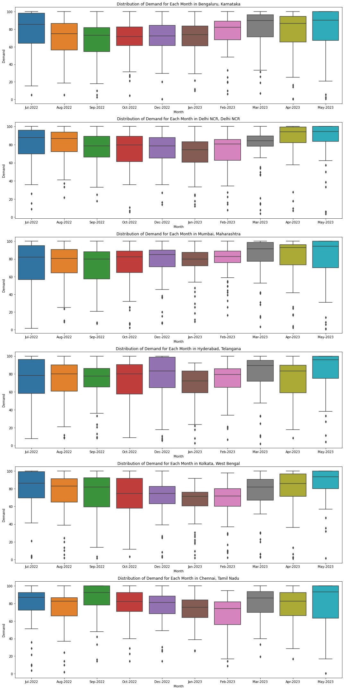
</div>
</div>
<p><code class="docutils literal notranslate"><span class="pre">The</span> <span class="pre">above</span> <span class="pre">visualizations</span> <span class="pre">are</span> <span class="pre">boxplots</span> <span class="pre">showing</span> <span class="pre">the</span> <span class="pre">distribution</span> <span class="pre">of</span> <span class="pre">demand</span> <span class="pre">for</span> <span class="pre">each</span> <span class="pre">month,</span> <span class="pre">separately</span> <span class="pre">for</span> <span class="pre">each</span> <span class="pre">of</span> <span class="pre">the</span> <span class="pre">top</span> <span class="pre">10</span> <span class="pre">cuisines</span> <span class="pre">with</span> <span class="pre">the</span> <span class="pre">highest</span> <span class="pre">overall</span> <span class="pre">average</span> <span class="pre">demand.</span> <span class="pre">They</span> <span class="pre">provide</span> <span class="pre">an</span> <span class="pre">overview</span> <span class="pre">of</span> <span class="pre">the</span> <span class="pre">variability</span> <span class="pre">in</span> <span class="pre">demand</span> <span class="pre">over</span> <span class="pre">time</span> <span class="pre">for</span> <span class="pre">these</span> <span class="pre">cuisines</span></code>.</p>
<br>
Each boxplot represents a month and shows the median (the line inside the box), the interquartile range (the size of the box), and the range (the whiskers or lines extending from the box) of the demand. Outliers, if any, are shown as individual points outside the whiskers.
<br><div class="cell docutils container">
<div class="cell_input docutils container">
<div class="highlight-ipython3 notranslate"><div class="highlight"><pre><span></span><span class="c1"># Create a pivot table for the heatmap</span>
<span class="n">pivot_df_monthly_city</span> <span class="o">=</span> <span class="n">visualization_df_monthly</span><span class="o">.</span><span class="n">pivot_table</span><span class="p">(</span><span class="n">index</span><span class="o">=</span><span class="s1">&#39;City&#39;</span><span class="p">,</span> <span class="n">columns</span><span class="o">=</span><span class="s1">&#39;Month&#39;</span><span class="p">,</span> <span class="n">values</span><span class="o">=</span><span class="s1">&#39;Demand&#39;</span><span class="p">)</span>

<span class="c1"># Create a heatmap to visualize the average demand for each city in each month</span>
<span class="n">plt</span><span class="o">.</span><span class="n">figure</span><span class="p">(</span><span class="n">figsize</span><span class="o">=</span><span class="p">(</span><span class="mi">15</span><span class="p">,</span> <span class="mi">10</span><span class="p">))</span>
<span class="n">sns</span><span class="o">.</span><span class="n">heatmap</span><span class="p">(</span><span class="n">pivot_df_monthly_city</span><span class="p">,</span> <span class="n">cmap</span><span class="o">=</span><span class="s1">&#39;YlGnBu&#39;</span><span class="p">)</span>
<span class="n">plt</span><span class="o">.</span><span class="n">title</span><span class="p">(</span><span class="s1">&#39;Average Demand for Each City in Each Month&#39;</span><span class="p">)</span>
<span class="n">plt</span><span class="o">.</span><span class="n">show</span><span class="p">()</span>

<span class="c1"># Create a heatmap to visualize the average demand for each cuisine in each city</span>

<span class="n">pivot_df_cuisine_city</span> <span class="o">=</span> <span class="n">visualization_df_monthly</span><span class="o">.</span><span class="n">pivot_table</span><span class="p">(</span><span class="n">index</span><span class="o">=</span><span class="s1">&#39;Cuisine&#39;</span><span class="p">,</span> <span class="n">columns</span><span class="o">=</span><span class="s1">&#39;City&#39;</span><span class="p">,</span> <span class="n">values</span><span class="o">=</span><span class="s1">&#39;Demand&#39;</span><span class="p">)</span>

<span class="n">plt</span><span class="o">.</span><span class="n">figure</span><span class="p">(</span><span class="n">figsize</span><span class="o">=</span><span class="p">(</span><span class="mi">15</span><span class="p">,</span> <span class="mi">10</span><span class="p">))</span>
<span class="n">sns</span><span class="o">.</span><span class="n">heatmap</span><span class="p">(</span><span class="n">pivot_df_cuisine_city</span><span class="p">,</span> <span class="n">cmap</span><span class="o">=</span><span class="s1">&#39;YlGnBu&#39;</span><span class="p">)</span>
<span class="n">plt</span><span class="o">.</span><span class="n">title</span><span class="p">(</span><span class="s1">&#39;Average Demand for Each City for Each Cuisine&#39;</span><span class="p">)</span>
<span class="n">plt</span><span class="o">.</span><span class="n">show</span><span class="p">()</span>
</pre></div>
</div>
</div>
<div class="cell_output docutils container">
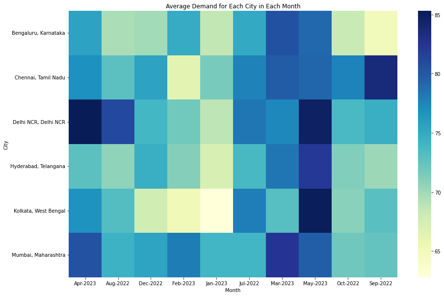
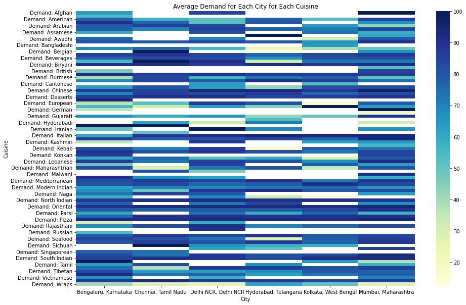
</div>
</div>
<br>
<p>The above heatmaps provide a visual representation of the average demand data.</p>
<p>The first heatmap shows the average demand for each city in each month. Cities are on the y-axis, and months are on the x-axis. The color of each cell indicates the average demand, with darker colors representing higher demand.</p>
<p>The second heatmap shows the average demand for each city for each cuisine. Cuisines are on the y-axis, and cities are on the x-axis. Again, the color of each cell indicates the average demand, with darker colors representing higher demand. This can help you see in which cities each cuisine is most in demand.</p>
<p>white spaces on the heatmap indicate that the data for that particular combination of city/cuisine is not available.</p>
<br><div class="cell docutils container">
<div class="cell_input docutils container">
<div class="highlight-ipython3 notranslate"><div class="highlight"><pre><span></span><span class="c1"># Convert the &#39;Cuisine&#39; column into just the cuisine name by removing the &#39;Demand: &#39; part</span>
<span class="n">df</span><span class="p">[</span><span class="s1">&#39;Cuisine&#39;</span><span class="p">]</span> <span class="o">=</span> <span class="n">df</span><span class="p">[</span><span class="s1">&#39;Cuisine&#39;</span><span class="p">]</span><span class="o">.</span><span class="n">str</span><span class="o">.</span><span class="n">replace</span><span class="p">(</span><span class="s1">&#39;Demand: &#39;</span><span class="p">,</span> <span class="s1">&#39;&#39;</span><span class="p">)</span>

<span class="c1"># Generate the monthly demand</span>
<span class="n">df_monthly</span> <span class="o">=</span> <span class="n">df</span><span class="o">.</span><span class="n">melt</span><span class="p">(</span><span class="n">id_vars</span><span class="o">=</span><span class="p">[</span><span class="s1">&#39;City&#39;</span><span class="p">,</span> <span class="s1">&#39;Cuisine&#39;</span><span class="p">],</span> <span class="n">value_vars</span><span class="o">=</span><span class="p">[</span><span class="s1">&#39;Jul-2022&#39;</span><span class="p">,</span> <span class="s1">&#39;Aug-2022&#39;</span><span class="p">,</span> <span class="s1">&#39;Sep-2022&#39;</span><span class="p">,</span> <span class="s1">&#39;Oct-2022&#39;</span><span class="p">,</span> <span class="s1">&#39;Dec-2022&#39;</span><span class="p">,</span> <span class="s1">&#39;Jan-2023&#39;</span><span class="p">,</span> <span class="s1">&#39;Feb-2023&#39;</span><span class="p">,</span> <span class="s1">&#39;Mar-2023&#39;</span><span class="p">,</span> <span class="s1">&#39;Apr-2023&#39;</span><span class="p">,</span> <span class="s1">&#39;May-2023&#39;</span><span class="p">],</span> <span class="n">var_name</span><span class="o">=</span><span class="s1">&#39;Month&#39;</span><span class="p">,</span> <span class="n">value_name</span><span class="o">=</span><span class="s1">&#39;Demand&#39;</span><span class="p">)</span>

<span class="c1"># Filter to include only the top 10 cuisines with the highest average demand</span>
<span class="n">top_cuisines</span> <span class="o">=</span> <span class="n">df_monthly</span><span class="o">.</span><span class="n">groupby</span><span class="p">(</span><span class="s1">&#39;Cuisine&#39;</span><span class="p">)[</span><span class="s1">&#39;Demand&#39;</span><span class="p">]</span><span class="o">.</span><span class="n">mean</span><span class="p">()</span><span class="o">.</span><span class="n">nlargest</span><span class="p">(</span><span class="mi">30</span><span class="p">)</span><span class="o">.</span><span class="n">index</span>
<span class="n">top_cuisines_df</span> <span class="o">=</span> <span class="n">df_monthly</span><span class="p">[</span><span class="n">df_monthly</span><span class="p">[</span><span class="s1">&#39;Cuisine&#39;</span><span class="p">]</span><span class="o">.</span><span class="n">isin</span><span class="p">(</span><span class="n">top_cuisines</span><span class="p">)]</span>

<span class="c1"># Facet Grid (Line Plot) for each City</span>
<span class="n">g</span> <span class="o">=</span> <span class="n">sns</span><span class="o">.</span><span class="n">FacetGrid</span><span class="p">(</span><span class="n">df_monthly</span><span class="p">,</span> <span class="n">col</span><span class="o">=</span><span class="s1">&#39;City&#39;</span><span class="p">,</span> <span class="n">col_wrap</span><span class="o">=</span><span class="mi">4</span><span class="p">,</span> <span class="n">height</span><span class="o">=</span><span class="mi">4</span><span class="p">,</span> <span class="n">aspect</span><span class="o">=</span><span class="mf">1.5</span><span class="p">)</span>
<span class="n">g</span> <span class="o">=</span> <span class="n">g</span><span class="o">.</span><span class="n">map</span><span class="p">(</span><span class="n">sns</span><span class="o">.</span><span class="n">lineplot</span><span class="p">,</span> <span class="s1">&#39;Month&#39;</span><span class="p">,</span> <span class="s1">&#39;Demand&#39;</span><span class="p">)</span>
<span class="n">plt</span><span class="o">.</span><span class="n">xticks</span><span class="p">(</span><span class="n">rotation</span><span class="o">=</span><span class="mi">90</span><span class="p">)</span>
<span class="n">plt</span><span class="o">.</span><span class="n">show</span><span class="p">()</span>
</pre></div>
</div>
</div>
<div class="cell_output docutils container">
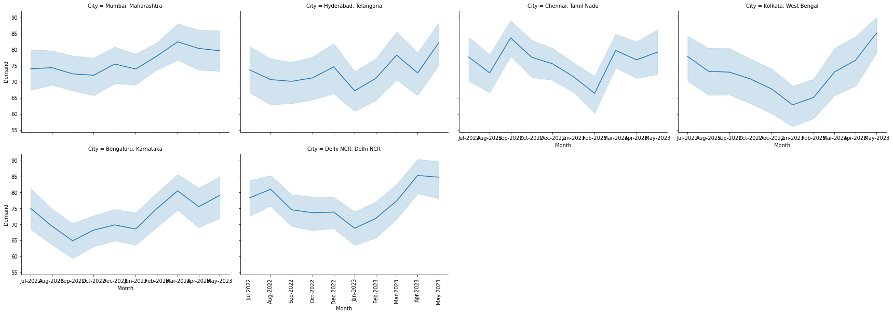
</div>
</div>
<p><code class="docutils literal notranslate"><span class="pre">A</span> <span class="pre">facet</span> <span class="pre">grid</span> <span class="pre">of</span> <span class="pre">line</span> <span class="pre">plots</span> <span class="pre">for</span> <span class="pre">each</span> <span class="pre">city,</span> <span class="pre">showing</span> <span class="pre">how</span> <span class="pre">demand</span> <span class="pre">has</span> <span class="pre">changed</span> <span class="pre">over</span> <span class="pre">time.</span></code></p>
<div class="cell docutils container">
<div class="cell_input docutils container">
<div class="highlight-ipython3 notranslate"><div class="highlight"><pre><span></span><span class="c1"># Facet Grid (Line Plot) for each Cuisine (Top 30 Cuisines)</span>
<span class="n">g</span> <span class="o">=</span> <span class="n">sns</span><span class="o">.</span><span class="n">FacetGrid</span><span class="p">(</span><span class="n">top_cuisines_df</span><span class="p">,</span> <span class="n">col</span><span class="o">=</span><span class="s1">&#39;Cuisine&#39;</span><span class="p">,</span> <span class="n">col_wrap</span><span class="o">=</span><span class="mi">3</span><span class="p">,</span> <span class="n">height</span><span class="o">=</span><span class="mi">4</span><span class="p">,</span> <span class="n">aspect</span><span class="o">=</span><span class="mf">1.5</span><span class="p">)</span>
<span class="n">g</span> <span class="o">=</span> <span class="n">g</span><span class="o">.</span><span class="n">map</span><span class="p">(</span><span class="n">sns</span><span class="o">.</span><span class="n">lineplot</span><span class="p">,</span> <span class="s1">&#39;Month&#39;</span><span class="p">,</span> <span class="s1">&#39;Demand&#39;</span><span class="p">)</span>
<span class="n">plt</span><span class="o">.</span><span class="n">xticks</span><span class="p">(</span><span class="n">rotation</span><span class="o">=</span><span class="mi">90</span><span class="p">)</span>
<span class="n">plt</span><span class="o">.</span><span class="n">show</span><span class="p">()</span>
</pre></div>
</div>
</div>
<div class="cell_output docutils container">
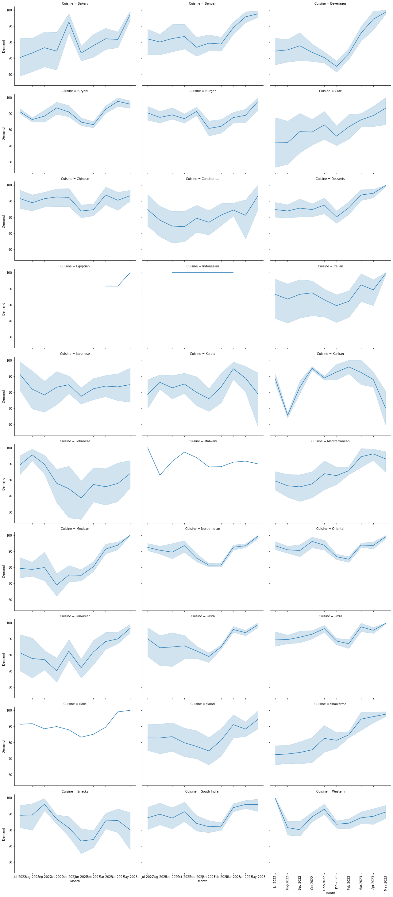
</div>
</div>
<p><code class="docutils literal notranslate"><span class="pre">A</span> <span class="pre">facet</span> <span class="pre">grid</span> <span class="pre">of</span> <span class="pre">line</span> <span class="pre">plots</span> <span class="pre">for</span> <span class="pre">each</span> <span class="pre">of</span> <span class="pre">the</span> <span class="pre">top</span> <span class="pre">30</span> <span class="pre">cuisines,</span> <span class="pre">showing</span> <span class="pre">how</span> <span class="pre">demand</span> <span class="pre">has</span> <span class="pre">changed</span> <span class="pre">over</span> <span class="pre">time.</span></code></p>
</section>

    <script type="text/x-thebe-config">
    {
        requestKernel: true,
        binderOptions: {
            repo: "binder-examples/jupyter-stacks-datascience",
            ref: "master",
        },
        codeMirrorConfig: {
            theme: "abcdef",
            mode: "python"
        },
        kernelOptions: {
            name: "python3",
            path: "./."
        },
        predefinedOutput: true
    }
    </script>
    <script>kernelName = 'python3'</script>

                </article>
              

              
              
                <footer class="bd-footer-article">
                  <!-- Previous / next buttons -->
<div class="prev-next-area">
    <a class="left-prev"
       href="Kaggle_Datasets.html"
       title="previous page">
      <i class="fa-solid fa-angle-left"></i>
      <div class="prev-next-info">
        <p class="prev-next-subtitle">previous</p>
        <p class="prev-next-title">Kaggle Datasets</p>
      </div>
    </a>
    <a class="right-next"
       href="House%20Listing%20Data.html"
       title="next page">
      <div class="prev-next-info">
        <p class="prev-next-subtitle">next</p>
        <p class="prev-next-title">House Listing Data (99 Acres , Magic Bricks etc.)</p>
      </div>
      <i class="fa-solid fa-angle-right"></i>
    </a>
</div>
                </footer>
              
            </div>
            
            
              
                <div class="bd-sidebar-secondary bd-toc"><div class="sidebar-secondary-items sidebar-secondary__inner">

  <div class="sidebar-secondary-item">
  <div class="page-toc tocsection onthispage">
    <i class="fa-solid fa-list"></i> Contents
  </div>
  <nav class="bd-toc-nav page-toc">
    <ul class="visible nav section-nav flex-column">
<li class="toc-h1 nav-item toc-entry"><a class="reference internal nav-link" href="#">Restaurant Data ( Zomato )</a></li>
<li class="toc-h1 nav-item toc-entry"><a class="reference internal nav-link" href="#zomato-trends">ZOMATO TRENDS</a></li>
</ul>

  </nav></div>

</div></div>
              
            
          </div>
          <footer class="bd-footer-content">
            <div class="bd-footer-content__inner">
<div class="bd-footer-content__inner container">
  
  <div class="footer-item">
    
<p class="component-author">
By <a href="https://www.linkedin.com/in/vatsal-bharti-a0190911b/">Vatsal Bharti</a>
</p>

  </div>
  
  <div class="footer-item">
    
  <p class="copyright">
    
      © Copyright 2022.
      <br/>
    
  </p>

  </div>
  
  <div class="footer-item">
    
  </div>
  
  <div class="footer-item">
    
  </div>
  
</div></div>
          </footer>
        

      </main>
    </div>
  </div>
  
  <!-- Scripts loaded after <body> so the DOM is not blocked -->
  <script src="_static/scripts/bootstrap.js?digest=12da95d707ffb74b382d"></script>
<script src="_static/scripts/pydata-sphinx-theme.js?digest=12da95d707ffb74b382d"></script>

  <footer class="bd-footer">
  </footer>
  </body>
</html>